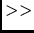
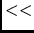

| process1 |
process1 takes input from file1 |
| process2 |
process2 writes on (new) file2 |
| process3  file3 | process3 appends to file3 |
| process4 |
output of process4 is input to process5 |
| process6  text | take input from following lines |
So let's begin with a capsule review of the basic UNIX operators
as summarized in Table 8.1.
The symbols  ,
,  , and are known as ``redirection operators,''
since they redirect input and output into or out of the command
(i.e., process).
The symbol
, and are known as ``redirection operators,''
since they redirect input and output into or out of the command
(i.e., process).
The symbol  is called a ``pipe,'' since we can picture
data flowing from one process to another through the ``pipe.''
Here is a simple SU ``pipeline'' with input ``indata'' and
output ``outdata'':
is called a ``pipe,'' since we can picture
data flowing from one process to another through the ``pipe.''
Here is a simple SU ``pipeline'' with input ``indata'' and
output ``outdata'':
sufilter f=4,8,42,54 <indata | sugain tpow=2.0 >outdataThis example shows a band-limiting operation being ``piped'' into a gaining operation. The input data set
indata is directed into
the program sufilter with the < operator, and similarly, the output data set outdata receives the data because of the > operator.
The output of sufilter is connected to the input of sugain by use of the | operator.
The strings with the = signs illustrate
how parameters are passed to SU programs. The program sugain
receives the assigned value 2.0 to its parameter tpow, while
the program sufilter receives the assigned four component vector
to its parameter f. To find out what the valid parameters are
for a given program, we use the self-doc facility.
By the way, space around the UNIX
redirection and pipe symbols is optional--the example shows
one popular style. On the other hand, spaces around the =
operator are not permitted.
The first four symbols in Table 8.1 are the basic grammar of UNIX; the final entry is the symbol for the less commonly used ``here document'' redirection. Despite its rarity in interactive use, SU shell programs are significantly enhanced by appropriate use of the operator--we will illustrate this below.
Many built-in UNIX commands do not have a self-documentation facility like SU's--instead, most do have ``man'' pages. For example,
% man cat
CAT(1) UNIX Programmer's Manual CAT(1)
NAME
cat - catenate and print
SYNOPSIS
cat [ -u ] [ -n ] [ -s ] [ -v ] file ...
DESCRIPTION
Cat reads each file in sequence and displays it on the stan-
dard output. Thus
cat file
displays the file on the standard output, and
cat file1 file2 >file3
--More--
You need to know a bit more UNIX lore
to use SU efficiently--we'll introduce these tricks of the trade in
the context of the examples discussed later in this chapter.